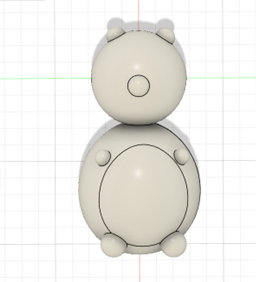

WEEK 7: ELECTRONIC OUTPUT DEVICES
<br>
<b>Output device </b>
For this week’s project my goal, was to continue developing the sensor system for my final project. I wanted to create a water sensor that would turn off my pump if water levels were too low and relate the speed to the water level if the water level was above this minimum value. Since I more or less did this with the capacitive sensors last week, I wanted to make my system more complex and add a TFT screen display as one of my outputs so the user could monitor the status of their pump. Additionally I switched out my capacitive sensors for the “High Sensitivity Water sensor” available in the lab.
<u>Water level Sensor</u>
This water sensor works in the form of a variable resistor, where the resistance varies based on resistance based on the water of level it is exposed to. The code I began with was very similar to the code I used last week. I started out with just the one output of the motor to keep things simple.
I realized very quickly that the water level sensor was much more sensitive than I had anticipated. This makes sense in hindsight given that I believe this sensor is normally used for soil moisture data. As such I will probably have to reevaluate whether it is appropriate to use for my final project.
Nevertheless, the code worked well but I realized that the sensor values were not water level values. I performed a similar extrapolation to last week and got the following curve:
<div class = "center">
<img src="../07/calibration.png"
width ="700" height="500"/>
</div>
<u>Using the TFT display</u>
To make my system more complex, and get to experiment with a new sensor, I decided to go with the TFT screen sensor since this could easily be incorporate into my pre-existing water sensor and pump system. I decided I wanted to display a warning level when my water fell below a minimum value, and to otherwise just display the water value.
I started off with the sample example code for TFT graphics but found this had way more information than I needed since I was only looking to have text as an output and no graphics. I decided to look online for simpler resources but the code I ended up using was an outdated TFT code that was not recognized by Arduino so this ended up being a mistake. In the end Kassia saved the day and walked through the more complicated TFT code so I could understand which parts were relevant to my code.
Once the code ran I realized that the sensor values were printing on top of each other. To fix this I simply added a delay after the code.
<u> Removing delays </u>
Again, I followed my work from that week and used the millis structure to remove any delays. While the code ran at first, I experience the same error from before where the previous data would overlay over each other. In addition, there also seemed to be no delay in printing the sensor values this time. I realized that my error was coming from the fact that I was not updating the millis after each value. Therefore, it was running through the if loop and not resetting but instead showing multiple values all at once (if I understand correctly).
<u> Using C++ structures </u>
I couldn’t figure out how to implement the C++ structure with my given code. There were too many variables and when I tried to separate the pump into its own class it wasn’t working. My goal therefore for the rest of this week is to figure this out!
<u> Using the Oscilloscope </u>
I was slightly confused how to use the oscilloscope at first, however, once Ibrahim walked me through it and showed me how to read the voltage and period values it made a lot more sense. I started off by measured my sensor, and given how sensitive it was it was really difficult to get a reading on the voltage used because it would fluctuate so much. Below is a video of the reading I would get:
<video width ="300" height="500" autoplay loop muted>
<source src="../07/sensor.mp4" type="video/mp4" />
</video>
When I switched to the pump measurements, I found that there was way less fluctuation. The values I got are shown below but I interpreted this roughly as a Vmax of 5V and a period of 2ms.
<video width ="500" height="300" autoplay loop muted>
<source src="../07/pump.mp4" type="video/mp4" />
</video>
<u> Code </u>
Here is my code based on the previous discussion:
<pre><code>
#include <Adafruit_GFX.h> // Core graphics library
#include <Adafruit_ST7735.h> // Hardware-specific library for ST7735
#include <Adafruit_ST7789.h> // Hardware-specific library for ST7789
//#include <TFT.h> // Arduino LCD library
#include <SPI.h>
// create an instance of the library
#define TFT_CS 10
#define TFT_RST 9
#define TFT_DC 8
//TFT TFTscreen = TFT(TFT_CS, TFT_DC, TFT_RST);
Adafruit_ST7789 tft = Adafruit_ST7789(TFT_CS, TFT_DC, TFT_RST);
// char array to print to the screen
char sensorPrintout[4];
// constants won't change. They're used here to set pin numbers:
const int A1A = 3; // define pin 3 for A-1A (PWM Speed)
const int A1B = 2;
// Sensor pins
const int sensorPower = 7;
const int sensorPin = A5;
// Value for storing water level
int sensorState = 0;
int val = 0;
float p = 3.1415926;
unsigned long currentMillis;
unsigned long previousMillis=0;
unsigned long interval = 1000 ;
//This is a function used to get the reading
int readSensor(unsigned long currentMillis, unsigned long previousMillis) {
digitalWrite(sensorPower, HIGH); // Turn the sensor ON
(currentMillis - previousMillis >= interval); // wait 1000 milliseconds&& (currentMillis - previousMillis1 >= interval)
val = analogRead(sensorPin); // Read the analog value form sensor
digitalWrite(sensorPower, LOW); // Turn the sensor OFF
return val; // send current reading
}
void setup() {
Serial.begin(9600);
pinMode(A1A, OUTPUT); // specify these pins as outputs
pinMode(A1B,OUTPUT);
digitalWrite(A1B, LOW);
analogWrite(A1A, 0); // start with the motors off
pinMode(sensorPin, INPUT);
// Set D7 as an OUTPUT
pinMode(sensorPower, OUTPUT);
// Set to LOW so no power flows through the sensor
digitalWrite(sensorPower, LOW);
Serial.println(val);
tft.init(135, 240); // Init ST7789 240x135
tft.fillScreen(ST77XX_BLACK);
}
//Screen
// Put this line at the beginning of every sketch that uses the GLCD:
//TFTscreen.begin();
void testdrawtext(char *text, uint16_t color) {
tft.setCursor(0, 0);
tft.setTextColor(color);
tft.setTextWrap(true);
tft.print(text);
}
//}
//try running with delays tomorrow
//remove delays
// figure out error with measurement
// measure on oscilloscope
//
void loop(){
currentMillis = millis();
//get the reading from the function below and print it
int level = readSensor(currentMillis,previousMillis);
Serial.print("Water level: ");
Serial.println(level);
if ((level < 100) && (currentMillis - previousMillis >= interval))
{
analogWrite(A1A, 0); // Speed to match photosensor
testdrawtext("Warning: Low water level ", ST77XX_WHITE);
(currentMillis - previousMillis >= interval);
previousMillis = currentMillis;
// tft.println("WARNING: LOW WATER LEVEL");
// set the font color
// tft.setTextColor(ST7735_RED);
}else if( (level > 100) && (currentMillis - previousMillis >= interval)){
analogWrite(A1A, level); // Speed to match photosensor
// Read the value of the sensor on A5
// Read the value of the sensor on A5
String sensorVal = String((level - 52.5)/69.1);
const char* ah = sensorVal.c_str();
Serial.println(ah);
tft.fillScreen(ST77XX_BLACK);
testdrawtext(ah, ST77XX_WHITE);
(currentMillis - previousMillis >= interval);
previousMillis = currentMillis;
}
}
//}
</code></pre>
<b> Final Product </b>
<video width ="300" height="500" autoplay loop muted>
<source src="../07/system.mp4" type="video/mp4" />
</video>
<u> Challenges </u>
It was really challenging dealing with so many input and output variables this week as I am still getting used to Arduino code. However, I got it to work in the end and got more valuable troubleshooting skills. In the future I would like to investigate having a more complex categorization system such that it reads “low water level”, “medium water level” and “high water level” depending on a pre-determined range of values. I am also excited to incorporate Wifi or Bluetooth in the coming weeks so that I can send this data directly to my phone.
<u> CAD drawing </u>
For the milling and casting project next week I decided to take a break with my final project plans and design something cute for my room. I went with a panda (that looks more like a pig but oh well).
Here are my original CAD drawings:
<div class = "center">

</div>
I then followed [this](https://www.youtube.com/watch?v=vKZx9eHEL6o) tutorial which explained how to create a mold out of this. I tried 2.5D in Fusion 360 as well but all the new features confused me so I thought I would keep it simple for my first test run. The tutorial was straightforward. I had some weird issues arise with cutting the component in my block so that it would produce an indent shape but I think it was reading the component weirdly. This was ultimately resolve by moving my panda component back to a separate body, although I’m not too sure why that worked.
After talking to Kassia she told me it may be hard to mill circular shapes (i.e. the legs and arms) at an angle as shown above so I tried to make them more perpendicular to the main body. Hopefully this version works a little better (saved as an STL).
<iframe src="https://college418.autodesk360.com/shares/public/SH9285eQTcf875d3c53903d799f79aad9cf7?mode=embed" width="640" height="480" allowfullscreen="true" webkitallowfullscreen="true" mozallowfullscreen="true" frameborder="0"></iframe>